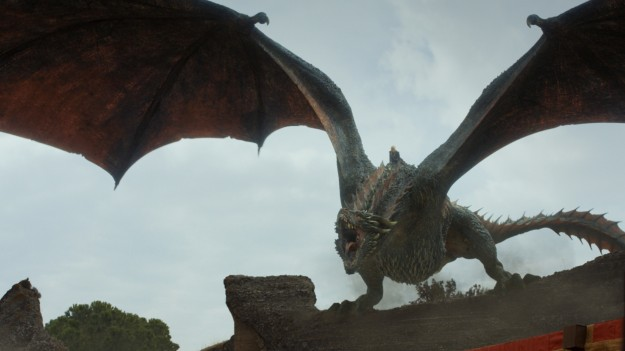
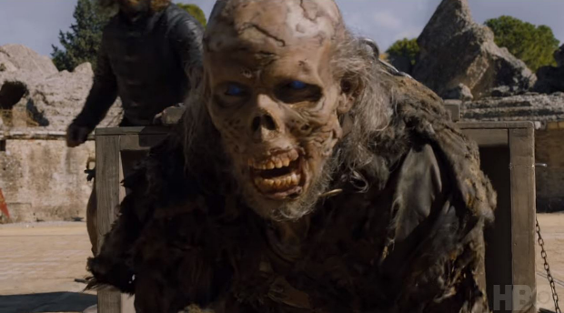

GAME OF THRONES 7. Sezon FİNAL Bölümü İncelemesi – O Bildiğin WESTEROS Yok Artık!
Bir süredir yılın belli dönemlerinde ekranlarımızda ve gündemimizde ciddi yer kaplayan Game of Thrones sezonlarının, ne zaman başlayıp ne zaman bittiğini yakalayamadığımız bir hızda gerçekleşmesine alışığız. Fakat bu sezon, gerek bölüm sayısının azalması gerek heyecan dozunu yüksek tutmasıyla çok daha baş döndürücü bir hızla gelip geçti hayatımızdan. Geçerken, tüm eleştirilerimize rağmen, içimizde bir boşluk hissi bırakmayı da ihmal etmedi. Açık olmak gerekirse efsane dizinin yedinci sezonu, seyircinin tahammülüne sırtını fazlasıyla dayayan şımarık bir sezondu. İzlediğimizden zevk alabilmek için mantık hatalarını çok kez görmezden gelmemiz, söyleyeceklerimizi defalarca yutmamız gerekti. Fakat bu tahammülü gösterebildiğimizde, Game of Thrones’un izlemenin en keyif verici dizilerden olduğu da su götürmez bir gerçek oluyor. Yedinci sezonun final bölümü de tek başına bu açıklamaya uyan bir bölümdü. Barındırdığı çok sayıdaki hatayı görmezden geldiğimizde izlemesi epey bit keyifliydi. Bizim buradaki işimiz hem hataları hem keyifleri konuşmak olduğundan, yazacak yine çok şeyimiz var. Bu yüzden lafı daha da gevelemeden sadede geliyorum:

Konseyin genel atmosferinden ve gidişatından memnun olsam da Daenerys’in orada bulunuş şekli baştan sona hatalarla doluydu. Öncelikle sezon başından beri Dany, yabancı ordularla kale kuşatırsan insanlar seni benimseyemez, diye uyarılırken şimdi Lekesiz ve Dothraki ordularının Kral’ın Şehri’ni kuşatmaya hazır durması anlamsızdı. Diyelim ki ters bir durum anında Daenerys hazırlıklı olmalıydı ve bu ordular dışında safında ordu kalmadı… Peki konseye koca ejderhayla iniş yapmak neyin nesiydi? Taraflar konseye minimum askeri güçle teşrif ederken Cersei’nin ejderhaların belli bir mesafede durmasını şart koşmaması mümkün olmamalı. Eğer bu mantıksızlıklar sırf etkileyici bir giriş için eklendiyse buradan senaristlere sesleniyorum: Bir sezonda aynı girişi kırk defa kullandığınız için birkaç saniyelik gerginlik ardından kanat sesleri duymak ve ejderhanın kükreyerek olay yerine teşrif etmesini görmek etkileyici olmayı bıraktı. Yemedik bu sefer, coşmadık. Gerçek taht oyununda Cersei, ejderha detayını atladığı takdirde tebaasıyle beraber küle dönüştürülerek cezalandırılmalıydı. Bunun yerine Daenerys diva triplerine eşliğinde sahneye geç girmekle yetindi. Girişi kurtaran tek şey; Lena Headey‘in mimikleri ile bir saniye içinde korku, hayranlık ve nefret duygularını verebilmesiydi.

Bölümün ve sezonun son demi, Akgezen ordusunun Doğu Gözcüsü tarafından Sur’u aşışından bahsedelim. Gördük ki Viserion ne buz ne de sıradan bir ateş üflüyor. Tahminen yakıcı değil ama yıkıcı bir soğuk alev püskürtüyor gırtlağından. Bunu Sur’un erimek yerine parçalanmasından anlayabiliyoruz. Sahne ne kadar etkileyici olsa da bir noktada hayal kırıklığına uğradığımı da itiraf etmek zorundayım. Akgezenlerin Sur’u aşma marifetinin bir ejderhaya dayandırılmamasını isterdim. Dar Deniz’in dondurulması veya Sur’un her yönüne yapılacak tam teşekküllü bir taarruz beni daha çok etkilerdi. Sur da ejderha etkisiyle yıkılınca dizide ejderha kuvvetini görmek kabak tadı vermeye başladı. Umarım Büyük Savaş sadece ejderhalara dayandırılan bir savaş olmaz. Öyle bir durumda sezonlardır dinlediğimiz birlik, beraberlik, ejderha camı, Rhollor gibi muhabbetler anlamını yitirir.